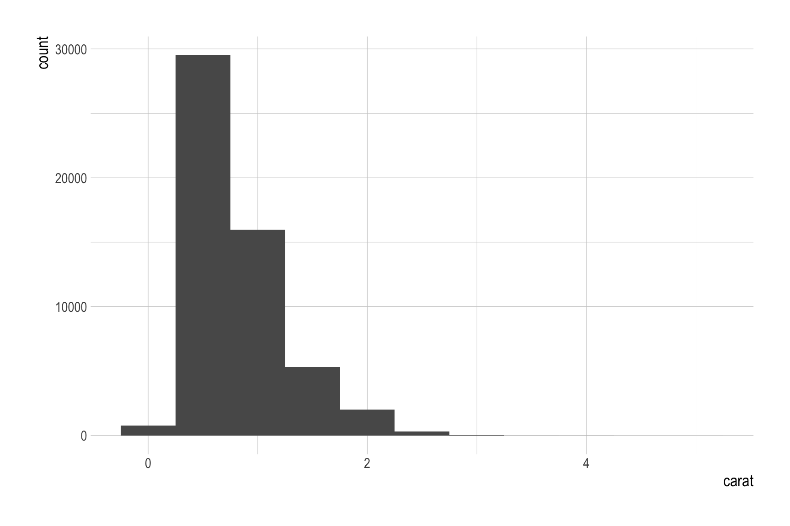
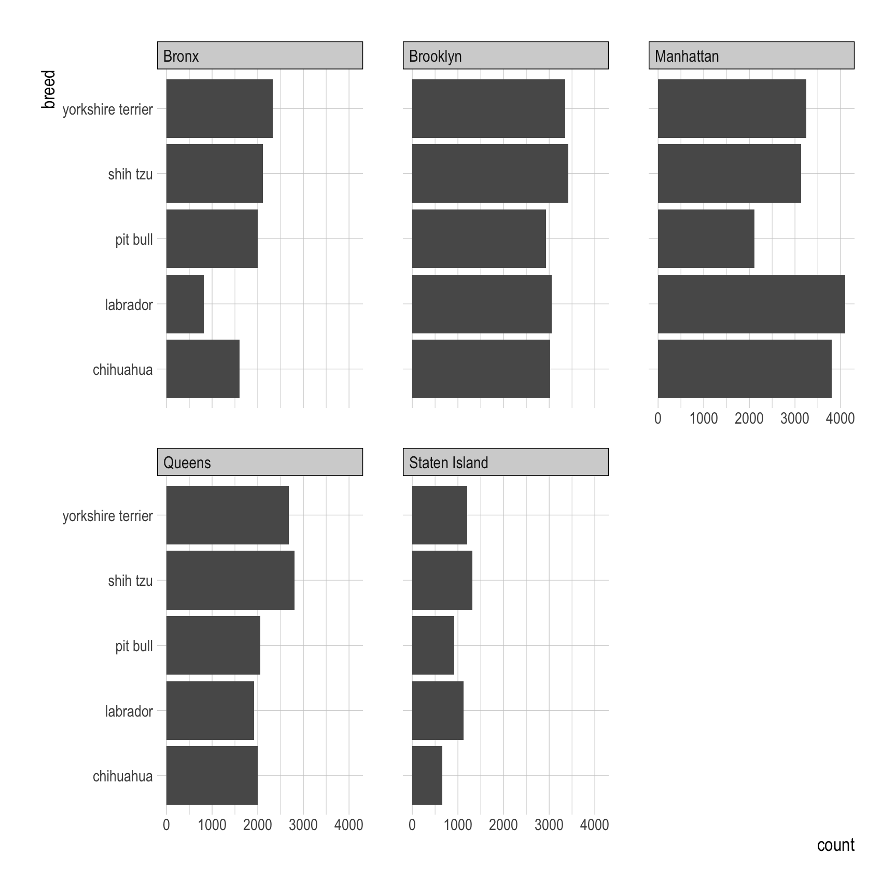

library(nycflights13)Note 22
group_by()
ungroup()
daily <- flights |>
group_by(year, month, day)
by_day <- daily |>
summarize(flights = n())
all_days <- daily |>
ungroup() |> # no longer grouped by date
summarize(flights = n()) # all flightscount()
n_dest <- flights |>
count(dest) |>
arrange(-n)n_dest2 <- flights |>
group_by(dest) |>
count() |>
arrange(-n)n_dest3 <- flights |>
group_by(dest) |>
summarize(n = n()) |>
arrange(-n)ggplot(diamonds) +
geom_histogram(aes(x = carat),
binwidth = .5)
diamonds |>
count(cut_width(carat, .5))# A tibble: 11 × 2
`cut_width(carat, 0.5)` n
<fct> <int>
1 [-0.25,0.25] 785
2 (0.25,0.75] 29498
3 (0.75,1.25] 15977
4 (1.25,1.75] 5313
5 (1.75,2.25] 2002
6 (2.25,2.75] 322
7 (2.75,3.25] 32
8 (3.25,3.75] 5
9 (3.75,4.25] 4
10 (4.25,4.75] 1
11 (4.75,5.25] 1df_dest <- flights |>
count(dest)n_distinct()
flights <- flightsdf_n_distinct <- flights |>
summarise(n_dest = n_distinct(dest))by_dest <- flights |>
group_by(dest) |>
summarise(n_dest = n_distinct(carrier)) |>
arrange(-n_dest)group_by() with multiple variables
daily <- flights |>
group_by(year, month, day)
per_day <- daily |>
summarize(flights = n())
per_month <- per_day |>
summarize(flights = sum(flights))
per_year <- per_month |>
summarize(flights = sum(flights))Classwork 11
nyc_dogs <- read_csv('https://bcdanl.github.io/data/nyc_dogs_cleaned.csv')Q1a
Top 5 most popular breeds
top_5_breeds <- nyc_dogs |>
count(breed) |>
arrange(-n) |>
filter(!is.na(breed)) |>
slice_head(n = 5)Q1b
Provide both (1) ggplot code and (2) a simple comment to describe how the distribution of the five popular breeds varies by borough.
only_top_5 <- nyc_dogs |>
filter(breed == "yorkshire terrier" |
breed == "shih tzu" |
breed == "chihuahua" |
breed == "labrador" |
breed == "pit bull" )
only_top_5 <- nyc_dogs |>
filter(breed %in% c("yorkshire terrier", "shih tzu", "chihuahua", "labrador", "pit bull"))
top_5_breeds$breed[1] "yorkshire terrier" "shih tzu" "chihuahua"
[4] "labrador" "pit bull" only_top_5 <- nyc_dogs |>
filter(breed %in% top_5_breeds$breed)ggplot(only_top_5, aes(y = breed)) +
geom_bar() +
facet_wrap(borough ~.)
Q1c
Find the five most popular breeds in each borough.
q1c <- nyc_dogs |>
group_by(borough) |>
count(breed) |>
filter(!is.na(breed)) |>
slice_max(n, n = 5)q1c_rank <- nyc_dogs |>
group_by(borough) |>
count(breed) |>
arrange(borough, -n) |>
filter(!is.na(breed)) |>
mutate(ranking = dense_rank(-n)) |> # ranking within a group
filter(ranking <= 5 )q1c_head <- nyc_dogs |>
group_by(borough) |>
count(breed) |>
arrange(borough, -n) |>
filter(!is.na(breed)) |>
slice_head(n = 5)Q1d
Find the five most popular dog names for each gender.
q1d <- nyc_dogs |>
filter(!is.na(gender)) |>
filter(!is.na(name)) |>
group_by(gender) |>
count(name) |>
slice_max(n, n = 5)